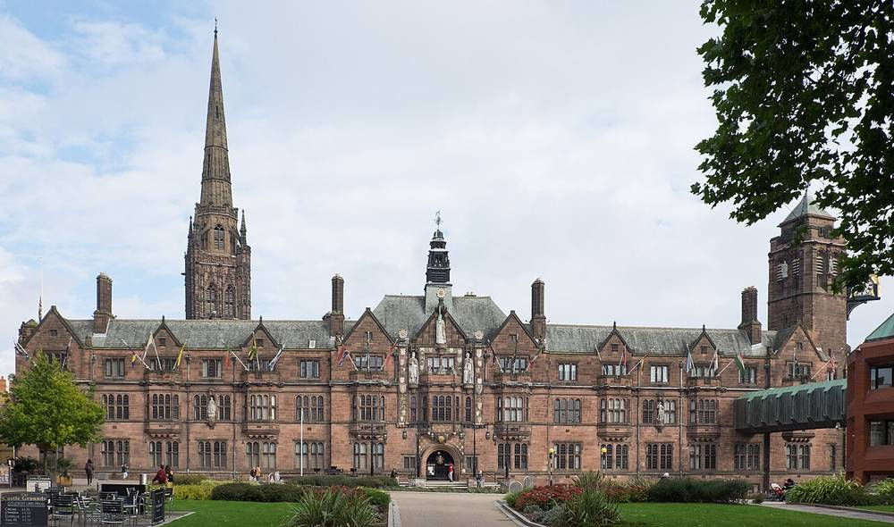

영국 코번트리시, 에온과 그린벨트에 25MW 태양광 추진…시의원들 "에온이 얼마 버는지 공개하라"

7,000가구분 전기·사업비는 에온 부담, 시는 소유 땅 임대료와 전력 구매 검토…두 번째 단지 부지도 물색
영국 잉글랜드 코번트리시가 에너지 기업 에온(E.ON)과 손잡고 시 북쪽 그린벨트에 최대 출력 25MW 규모의 렌턴스 레인 태양광 발전소를 추진하면서, 두 번째 태양광 단지 부지도 찾고 있다. 이 발전소는 7,000가구가 넘는 집에 쓸 전기를 만들 수 있으며, 사업비는 에온이 모두 대고 시는 비용을 들이지 않는다. 시는 지금 소작농에게 빌려주고 있는 시 소유 땅을 에온에 임대해 농사보다 훨씬 많은 임대 수입을 얻을 것으로 보고, 생산 전력을 사들여 시 건물과 가로등에 쓰는 방안도 검토하고 있다. 코번트리시는 2025년 12월 18일 사업을 허가했지만, 부지가 걸쳐 있는 이웃 럭비 자치구가 허가를 거부해 에온이 이의를 제기한 상태다. 이번 주 시의회 감사조정위원회에서 의원들은 그린벨트를 내준 만큼 에온이 얻는 수익을 밝히라고 요구했지만, 시 담당 공무원은 상업적으로 민감한 정보라며 공개를 거절했다. 시는 두 번째 단지 후보로 갈색부지(옛 산업 부지)와 녹지를 주로 보고 있으며, 주차장은 지지 구조물 비용이 비싸 적극 검토하지 않는다고 설명했다.
시민에너지 관점
스코틀랜드 정부는 2030년까지 지역·공동체 소유 재생에너지 2GW를 목표로 두고, 상업 사업에도 지역 공동체가 지분으로 참여하도록 권장하는 지침을 운영한다. 공공의 땅을 내주면서 사업자가 얼마를 버는지조차 알 수 없다면 주민이 그린벨트 개발을 의심하는 것은 당연하다. 시가 임대료만 받는 데 그치지 않고 시민 출자 지분을 함께 넣으면 수익 공개와 지역 환원은 자연스럽게 따라온다. 한국 지자체도 공공부지 태양광을 공모할 때 시민 지분과 수익 공개 조건을 처음부터 넣어야 한다.
출처: Coventry Live(Coventry Telegraph) 2026-11-14 David Bentley 원문 보기
英コベントリー市、E.ONとグリーンベルトに25MW太陽光を推進…市議「E.ONがいくら稼ぐか公開を」
7,000世帯分の電力・事業費はE.ON負担、市は所有地の賃料と電力購入を検討…2カ所目の用地も物色
英イングランドのコベントリー市がエネルギー企業E.ONと組み、市北部のグリーンベルトに最大出力25MWの「レントンズ・レーン太陽光発電所」を推進するとともに、2カ所目の太陽光団地の用地も探している。この発電所は7,000世帯以上の電力をまかなえ、事業費はE.ONが全額負担し、市の費用負担はない。市は現在小作農に貸している市有地をE.ONに賃貸することで農業よりはるかに多い賃料収入を見込み、発電した電力を買い取って市の建物や街灯に使う案も検討している。コベントリー市は2025年12月18日に事業を許可したが、用地がまたがる隣のラグビー自治区が許可を拒否し、E.ONが異議を申し立てている。今週の市議会審査調整委員会で議員らは、グリーンベルトを差し出す以上E.ONの収益を明らかにすべきだと求めたが、市の担当職員は商業上の機密だとして公開を拒んだ。市は2カ所目の候補としてブラウンフィールド（旧産業用地）や緑地を主に見ており、駐車場は支持構造物の費用が高いため積極的には検討していないと説明した。
市民エネルギーの視点
スコットランド政府は2030年までに地域・コミュニティ所有の再エネ2GWを目標に掲げ、商業事業にも地域コミュニティが持ち分で参加するよう促す指針を運用している。公共の土地を差し出しながら事業者がいくら稼ぐのかさえ分からなければ、住民がグリーンベルト開発を疑うのは当然だ。市が賃料を受け取るだけでなく市民出資の持ち分を組み込めば、収益の公開と地域還元は自然についてくる。韓国の自治体も公共用地の太陽光を公募する際、市民の持ち分と収益公開の条件を最初から盛り込むべきだ。
出典: Coventry Live(Coventry Telegraph) 2026-11-14 David Bentley 原文を読む
英国考文垂市与E.ON在绿带推进25MW光伏…市议员："公开E.ON能赚多少"
可供7,000户用电、项目费用由E.ON承担，市政府考虑收取自有土地租金并购电…同时物色第二个园区
英国英格兰考文垂市与能源企业E.ON合作，在市北部绿带推进最大出力25MW的伦顿斯巷光伏电站，同时寻找第二个光伏园区的选址。该电站可为7,000多户家庭供电，项目费用全部由E.ON承担，市政府无需出资。市政府预计，把目前租给佃农的市有土地转租给E.ON，可获得远高于农业的租金收入，还在考虑购买所发电力用于市政建筑和路灯。考文垂市已于2025年12月18日批准该项目，但因用地横跨的邻近拉格比自治市拒绝批准，E.ON已提出上诉。本周市议会审查协调委员会上，议员们要求既然拿出了绿带，就应公开E.ON的收益，但市政负责官员以商业敏感信息为由拒绝公开。市政府表示，第二个园区主要考虑棕地（原工业用地）和绿地，停车场因支撑结构成本高而未积极考虑。
市民能源视角
苏格兰政府设定了到2030年地方和社区所有可再生能源达到2GW的目标，并通过指南鼓励地方社区以股份参与商业项目。如果拿出公共土地却连开发商赚多少都不知道，居民怀疑绿带开发是理所当然的。市政府若不只收租金，而是同时引入市民出资股份，收益公开和地方回馈就会自然实现。韩国地方政府在公共用地光伏招标时，也应从一开始就写入市民持股和收益公开条件。
来源: Coventry Live(Coventry Telegraph) 2026-11-14 David Bentley 查看原文
Coventry pursues 25 MW green belt solar farm with E.ON — councillors demand to know what the company earns
Scheme would power over 7,000 homes at no cost to the council, which eyes higher rent and possible power purchase; search on for a second site
Coventry City Council is pressing ahead with the Lentons Lane solar farm, a 25 MW peak-output scheme on green belt land in the north of the city developed with energy company E.ON, and is also searching for a site for a second solar farm. The project could supply clean electricity to more than 7,000 homes, and E.ON is paying all project costs, with no cost to the council. The council expects to earn significantly higher rent by leasing its own land, currently let to a tenant farmer, to E.ON, and is exploring whether to buy the power to run council buildings and street lights. Coventry approved the scheme on 18 December 2025, but neighbouring Rugby Borough Council, across whose boundary the site extends, refused it, and E.ON's appeal has yet to be heard. At the council's scrutiny co-ordination committee this week, councillors asked how much E.ON stands to make given that green belt land has been released, but the officer leading the partnership declined, calling it commercially sensitive. The council said the second site search is focused mainly on brownfield and greenfield land, and that car parks are not being actively considered because the supporting structures are expensive.
Citizen Energy View
The Scottish Government has set a target of 2 GW of community and locally owned renewable energy by 2030 and issues guidance encouraging communities to take equity stakes in commercial projects. When public land is handed over and no one can even learn what the developer earns, residents are right to be suspicious of green belt development. If the council took a citizen investment stake rather than settling for rent, disclosure of returns and local benefit would follow naturally. Korean local governments, too, should write citizen ownership and profit-disclosure conditions into public-land solar tenders from the start.
Source: Coventry Live(Coventry Telegraph) 2026-11-14 David Bentley Read the original